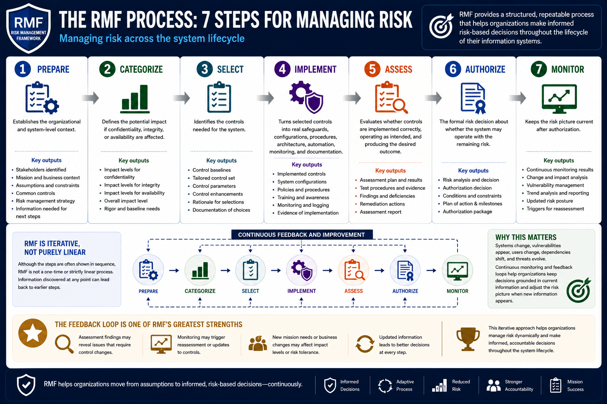

What Is RMF?
The RMF Process
Connecting to LMS... Progress: in progress
Version 1.0 | Date: 2026-06-16 | Educational overview of Risk Management Framework concepts.

Narration
The RMF process is often described through seven steps: Prepare, Categorize, Select, Implement, Assess, Authorize, and Monitor. These steps help organizations manage risk across the system lifecycle.
Prepare establishes the organizational and system-level context. Teams identify stakeholders, missions, assumptions, common controls, risk management strategy, and the information needed to make later steps more effective.
Categorize defines the potential impact if confidentiality, integrity, or availability are affected. Categorization shapes the level of rigor and helps determine which baseline controls may be appropriate.
Select identifies the controls needed for the system. Implement turns those selected controls into real safeguards, configurations, procedures, architecture, automation, monitoring, and documentation.
Assess evaluates whether controls are implemented correctly, operating as intended, and producing the desired outcome. Authorize is the formal risk decision about whether the system may operate with the remaining risk.
Monitor keeps the risk picture current after authorization. Systems change, vulnerabilities appear, users change, dependencies shift, and threats evolve. Continuous monitoring helps the organization keep decisions grounded in current information.
Although the steps are often shown in sequence, RMF is not purely linear. Findings may cause control changes, monitoring may trigger reassessment, and new mission needs may require updates to categorization, controls, or authorization conditions.
That feedback loop is one of RMF's strengths. It lets organizations adjust the risk picture when new information appears instead of relying on assumptions from an earlier point in the system lifecycle.